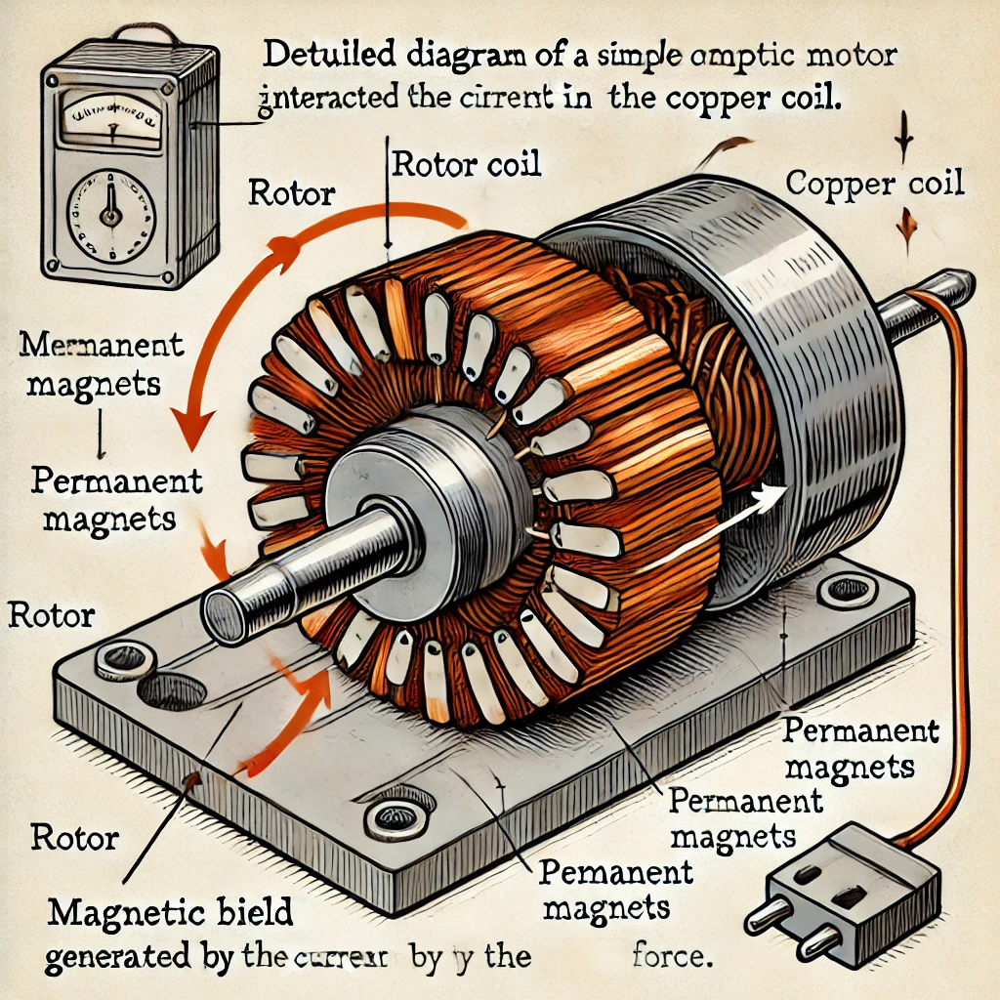
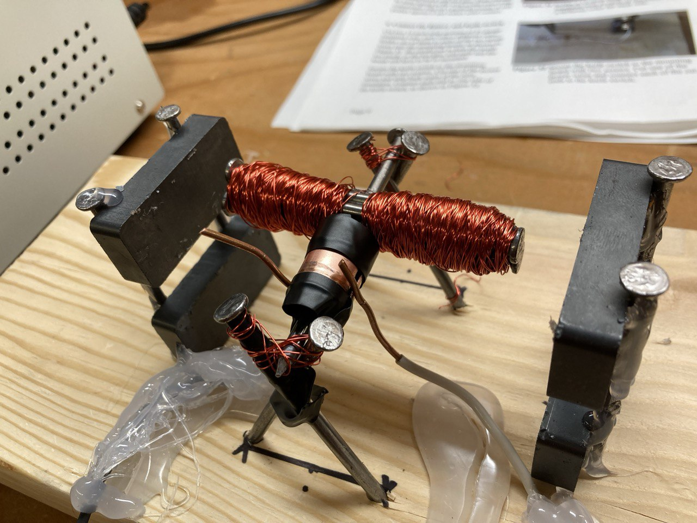

DC Motor
"Building the Basics: Mastering DC Motor Fundamentals in the Lab."
Project information
- Category: Other
- Purpose: Lab Project
- Project date: 10 Oct, 2024
- Project Team: Ahmed Amin
- Project Video: Youtube
Overview
This project showcases the design and fabrication of a simple DC motor, built as part of a laboratory experiment. The motor consists of basic materials such as copper wire, magnets, a power supply, and other easily accessible components, demonstrating core concepts of electromagnetism and how they apply in real-world electrical machines.
Materials Used
- Copper wire (enamel-coated)
- Permanent magnets
- 12 Iron nails
- Power supply (0-30V, 10A)
- Wooden base for mounting
- Hot glue for securing components
- Steel rods and screws for support structure
- Insulated wiring for connections
Assembly Process
1. Rotor Creation
The heart of the motor, the rotor, was made by wrapping multiple turns of enamel-coated copper wire around an iron core.
This formed the coil responsible for generating a magnetic field when current is applied.
2. Magnetic Field Setup
Two permanent magnets were mounted on either side of the rotor using screws and hot glue to hold them securely.
These magnets provide the external magnetic field necessary for motor rotation.
3. Electrical Connections
Insulated wires were connected from the copper coil to the power supply.
Careful connections ensured that the coil would receive current when the circuit was closed, enabling the rotor to spin.
4. Mounting and Balancing
The assembly was mounted on a sturdy wooden base to keep everything in place.
The rotor was supported by steel rods that allowed it to spin freely without friction.
5. Testing
Once the motor was assembled, the power supply was adjusted to deliver a small voltage across the coil.
The interaction between the current in the coil and the external magnetic field produced a torque, causing the rotor to spin.
How It Works (Theory-Based Explanation)
The operation of a simple DC motor is based on the fundamental principles of electromagnetism, specifically the Lorentz Force.
When current flows through a conductor placed within a magnetic field, the conductor experiences a force.
In the case of our DC motor, the conductor is the copper coil wound around the rotor, and the magnetic field is generated by the two permanent magnets.

The Magnetic Field Interaction
When the power supply is turned on, current flows through the copper coil in the rotor, creating an electromagnet.
This electromagnet interacts with the magnetic field from the permanent magnets attached to the stator.
The magnetic field lines generated by the current in the coil oppose the magnetic field of the permanent magnets.
Generation of Torque
As current flows through the coil, the interaction between the magnetic fields produces a force known as the Lorentz Force.
This force pushes one side of the coil downward and the opposite side upward, creating a torque that causes the rotor to spin.
This movement converts electrical energy into mechanical energy.
Commutator Action
In more advanced DC motors, a commutator would be used to switch the direction of current periodically.
This ensures that the torque produced always rotates the rotor in the same direction, allowing for continuous spinning.
In this basic setup, manual adjustments or an external circuit could be used to achieve similar results.
This cyclical interaction between the generated magnetic fields and the permanent magnets' fields drives the rotation,
demonstrating the basic working principle of DC motors used in many mechanical and electrical applications.
Applications and Learning Outcomes

Through this experiment, key concepts such as electromagnetism, torque generation, and the operation of electric motors were explored.
While the design is basic, it mirrors the fundamental principles of more complex DC motors used in various applications,
from household appliances to industrial machines.